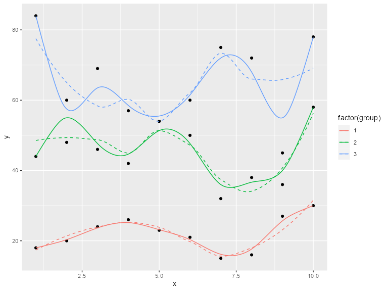

library(ggplot2)
## Warning: package 'ggplot2' was built under R version 4.2.2
library(gridExtra)
## Warning: package 'gridExtra' was built under R version 4.2.2
library(ggalt)
## Registered S3 methods overwritten by 'ggalt':
## method from
## grid.draw.absoluteGrob ggplot2
## grobHeight.absoluteGrob ggplot2
## grobWidth.absoluteGrob ggplot2
## grobX.absoluteGrob ggplot2
## grobY.absoluteGrob ggplot2
library(scales)
# current verison
packageVersion("ggalt")
## [1] '0.6.2'
set.seed(1492)
dat <- data.frame(x=c(1:10, 1:10, 1:10),
y=c(sample(15:30, 10), 2*sample(15:30, 10), 3*sample(15:30, 10)),
group=factor(c(rep(1, 10), rep(2, 10), rep(3, 10)))
)Splines!
ggplot(dat, aes(x, y, group=group, color=group)) +
geom_point() +
geom_line()
ggplot(dat, aes(x, y, group=group, color=factor(group))) +
geom_point() +
geom_line() +
geom_smooth(se=FALSE, linetype="dashed", size=0.5)
## Warning: Using `size` aesthetic for lines was deprecated in ggplot2 3.4.0.
## ℹ Please use `linewidth` instead.
## `geom_smooth()` using method = 'loess' and formula = 'y ~ x'
ggplot(dat, aes(x, y, group=group, color=factor(group))) +
geom_point(color="black") +
geom_smooth(se=FALSE, linetype="dashed", size=0.5) +
geom_xspline(size=0.5)
## `geom_smooth()` using method = 'loess' and formula = 'y ~ x'
## Warning: Using the `size` aesthetic in this geom was deprecated in ggplot2 3.4.0.
## ℹ Please use `linewidth` in the `default_aes` field and elsewhere instead.
ggplot(dat, aes(x, y, group=group, color=factor(group))) +
geom_point(color="black") +
geom_smooth(se=FALSE, linetype="dashed", size=0.5) +
geom_xspline(spline_shape=-0.4, size=0.5)
## `geom_smooth()` using method = 'loess' and formula = 'y ~ x'
ggplot(dat, aes(x, y, group=group, color=factor(group))) +
geom_point(color="black") +
geom_smooth(se=FALSE, linetype="dashed", size=0.5) +
geom_xspline(spline_shape=0.4, size=0.5)
## `geom_smooth()` using method = 'loess' and formula = 'y ~ x'
ggplot(dat, aes(x, y, group=group, color=factor(group))) +
geom_point(color="black") +
geom_smooth(se=FALSE, linetype="dashed", size=0.5) +
geom_xspline(spline_shape=1, size=0.5)
## `geom_smooth()` using method = 'loess' and formula = 'y ~ x'
ggplot(dat, aes(x, y, group=group, color=factor(group))) +
geom_point(color="black") +
geom_smooth(se=FALSE, linetype="dashed", size=0.5) +
geom_xspline(spline_shape=0, size=0.5)
## `geom_smooth()` using method = 'loess' and formula = 'y ~ x'
ggplot(dat, aes(x, y, group=group, color=factor(group))) +
geom_point(color="black") +
geom_smooth(se=FALSE, linetype="dashed", size=0.5) +
geom_xspline(spline_shape=-1, size=0.5)
## `geom_smooth()` using method = 'loess' and formula = 'y ~ x'Alternate (better) density plots
# bkde
data(geyser, package="MASS")
ggplot(geyser, aes(x=duration)) +
stat_bkde(alpha=1/2)
## Bandwidth not specified. Using '0.14', via KernSmooth::dpik.
ggplot(geyser, aes(x=duration)) +
geom_bkde(alpha=1/2)
## Bandwidth not specified. Using '0.14', via KernSmooth::dpik.

set.seed(1492)
dat <- data.frame(cond = factor(rep(c("A","B"), each=200)),
rating = c(rnorm(200),rnorm(200, mean=.8)))
ggplot(dat, aes(x=rating, color=cond)) + geom_bkde(fill="#00000000")
## Bandwidth not specified. Using '0.36', via KernSmooth::dpik.
## Bandwidth not specified. Using '0.31', via KernSmooth::dpik.
ggplot(dat, aes(x=rating, fill=cond)) + geom_bkde(alpha=0.3)
## Bandwidth not specified. Using '0.36', via KernSmooth::dpik.
## Bandwidth not specified. Using '0.31', via KernSmooth::dpik.
# ash
set.seed(1492)
dat <- data.frame(x=rnorm(100))
grid.arrange(ggplot(dat, aes(x)) + stat_ash(),
ggplot(dat, aes(x)) + stat_bkde(),
ggplot(dat, aes(x)) + stat_density(),
nrow=3)
## Estimate nonzero outside interval ab.
## Bandwidth not specified. Using '0.43', via KernSmooth::dpik.
cols <- RColorBrewer::brewer.pal(3, "Dark2")
ggplot(dat, aes(x)) +
stat_ash(alpha=1/3, fill=cols[3]) +
stat_bkde(alpha=1/3, fill=cols[2]) +
stat_density(alpha=1/3, fill=cols[1]) +
geom_rug() +
labs(x=NULL, y="density/estimate") +
scale_x_continuous(expand=c(0,0)) +
theme_bw() +
theme(panel.grid=element_blank()) +
theme(panel.border=element_blank())
## Estimate nonzero outside interval ab.
## Bandwidth not specified. Using '0.43', via KernSmooth::dpik.Alternate 2D density plots
m <- ggplot(faithful, aes(x = eruptions, y = waiting)) +
geom_point() +
xlim(0.5, 6) +
ylim(40, 110)
m + geom_bkde2d(bandwidth=c(0.5, 4))
## Warning: Computation failed in `stat_bkde2d()`
## Caused by error in `contour_breaks()`:
## ! argument "z.range" is missing, with no default
m + stat_bkde2d(bandwidth=c(0.5, 4), aes(fill = ..level..), geom = "polygon")
## Warning: The dot-dot notation (`..level..`) was deprecated in ggplot2 3.4.0.
## ℹ Please use `after_stat(level)` instead.
## Computation failed in `stat_bkde2d()`
ProPublica StateFace
# Run show_stateface() to see the location of the TTF StateFace font
# You need to install it for it to work
set.seed(1492)
dat <- data.frame(state=state.abb,
x=sample(100, 50),
y=sample(100, 50),
col=sample(c("#b2182b", "#2166ac"), 50, replace=TRUE),
sz=sample(6:15, 50, replace=TRUE),
stringsAsFactors=FALSE)
gg <- ggplot(dat, aes(x=x, y=y))
gg <- gg + geom_stateface(aes(label=state, color=col, size=sz))
gg <- gg + scale_color_identity()
gg <- gg + scale_size_identity()
ggEncircling points automagically
d <- data.frame(x=c(1,1,2),y=c(1,2,2)*100)
gg <- ggplot(d,aes(x,y))
gg <- gg + scale_x_continuous(expand=c(0.5,1))
gg <- gg + scale_y_continuous(expand=c(0.5,1))
gg + geom_encircle(s_shape=1, expand=0) + geom_point()
gg + geom_encircle(s_shape=1, expand=0.1, colour="red") + geom_point()
gg + geom_encircle(s_shape=0.5, expand=0.1, colour="purple") + geom_point()
gg + geom_encircle(data=subset(d, x==1), colour="blue", spread=0.02) +
geom_point()
gg +geom_encircle(data=subset(d, x==2), colour="cyan", spread=0.04) +
geom_point()
gg <- ggplot(mpg, aes(displ, hwy))
gg + geom_encircle(data=subset(mpg, hwy>40)) + geom_point()
ss <- subset(mpg,hwy>31 & displ<2)
gg + geom_encircle(data=ss, colour="blue", s_shape=0.9, expand=0.07) +
geom_point() + geom_point(data=ss, colour="blue")Step ribbons
x <- 1:10
df <- data.frame(x=x, y=x+10, ymin=x+7, ymax=x+12)
gg <- ggplot(df, aes(x, y))
gg <- gg + geom_ribbon(aes(ymin=ymin, ymax=ymax),
stat="stepribbon", fill="#b2b2b2")
gg <- gg + geom_step(color="#2b2b2b")
gg
gg <- ggplot(df, aes(x, y))
gg <- gg + geom_ribbon(aes(ymin=ymin, ymax=ymax),
stat="stepribbon", fill="#b2b2b2",
direction="vh")
gg <- gg + geom_step(color="#2b2b2b")
ggLollipop charts
df <- read.csv(text="category,pct
Other,0.09
South Asian/South Asian Americans,0.12
Interngenerational/Generational,0.21
S Asian/Asian Americans,0.25
Muslim Observance,0.29
Africa/Pan Africa/African Americans,0.34
Gender Equity,0.34
Disability Advocacy,0.49
European/European Americans,0.52
Veteran,0.54
Pacific Islander/Pacific Islander Americans,0.59
Non-Traditional Students,0.61
Religious Equity,0.64
Caribbean/Caribbean Americans,0.67
Latino/Latina,0.69
Middle Eastern Heritages and Traditions,0.73
Trans-racial Adoptee/Parent,0.76
LBGTQ/Ally,0.79
Mixed Race,0.80
Jewish Heritage/Observance,0.85
International Students,0.87", stringsAsFactors=FALSE, sep=",", header=TRUE)
gg <- ggplot(df, aes(y=reorder(category, pct), x=pct))
gg <- gg + geom_lollipop(point.colour="steelblue", point.size=2, horizontal=TRUE)
gg <- gg + scale_x_continuous(expand=c(0,0), labels=percent,
breaks=seq(0, 1, by=0.2), limits=c(0, 1))
gg <- gg + labs(x=NULL, y=NULL,
title="SUNY Cortland Multicultural Alumni survey results",
subtitle="Ranked by race, ethnicity, home land and orientation\namong the top areas of concern",
caption="Data from http://stephanieevergreen.com/lollipop/")
gg <- gg + theme_minimal()
gg <- gg + theme(panel.grid.major.y=element_blank())
gg <- gg + theme(panel.grid.minor=element_blank())
gg <- gg + theme(axis.line.y=element_line(color="#2b2b2b", size=0.15))
## Warning: The `size` argument of `element_line()` is deprecated as of ggplot2 3.4.0.
## ℹ Please use the `linewidth` argument instead.
gg <- gg + theme(axis.text.y=element_text(margin=margin(r=0, l=0)))
gg <- gg + theme(plot.margin=unit(rep(30, 4), "pt"))
gg <- gg + theme(plot.title=element_text(face="bold"))
gg <- gg + theme(plot.subtitle=element_text(margin=margin(b=10)))
gg <- gg + theme(plot.caption=element_text(size=8, margin=margin(t=10)))
gg
## Warning: Using the `size` aesthietic with geom_segment was deprecated in ggplot2 3.4.0.
## ℹ Please use the `linewidth` aesthetic instead.Dumbbell charts
df <- data.frame(trt=LETTERS[1:5], l=c(20, 40, 10, 30, 50), r=c(70, 50, 30, 60, 80))
ggplot(df, aes(y=trt, x=l, xend=r)) +
geom_dumbbell(size=3, color="#e3e2e1",
colour_x = "#5b8124", colour_xend = "#bad744",
dot_guide=TRUE, dot_guide_size=0.25) +
labs(x=NULL, y=NULL, title="ggplot2 geom_dumbbell with dot guide") +
theme_minimal() +
theme(panel.grid.major.x=element_line(size=0.05)) +
theme(panel.grid.major.y=element_blank())with optional vertical dodging
df2 <- data.frame(trt = c(LETTERS[1:5], "D"),
l = c(20, 40, 10, 30, 50, 40),
r = c(70, 50, 30, 60, 80, 70))
ggplot(df2, aes(y=trt, x=l, xend=r)) +
geom_dumbbell(size=3, color="#e3e2e1",
colour_x = "#5b8124", colour_xend = "#bad744",
dot_guide=TRUE, dot_guide_size=0.25,
position=position_dodgev(height=0.8)) +
labs(x=NULL, y=NULL, title="ggplot2 geom_dumbbell with dot guide") +
theme_minimal() +
theme(panel.grid.major.x=element_line(size=0.05))